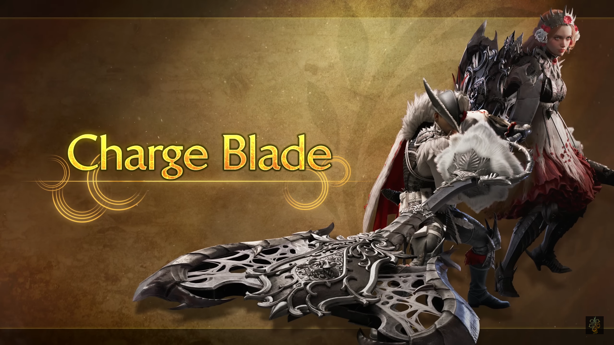

Uma arma pesada de movimentação e ataques lentos, mas com potência devastadora em cada um deles.
Sendo capaz de atacar e recuar, e até mesmo de bloquear, o Espadão é uma arma de alta
adaptabilidade.
Espada Longa
Uma arma especializada em combos e movimentos rápidos.
Com olhos atentos e boa coordenação, você pode contra-atacar os ataques inimigos.
O nível da sua Barra Espiritual aumentará ao acertar certos ataques.
Uma vez que a Barra Espiritual ficar vermelha, alguns de seus ataques ficarão mais fortes.
Espada e Escudo
Uma arma que se especializa em movimentação e ataques ágeis.
Você pode usar o seu escudo tanto para atacar quanto para se defender.
E até usar alguns itens com a arma ainda empunhada.
Duplas Lâminas
Uma arma especializada em ataques velozes.
Ative o Modo Demoníaco para amplificar o dano dos seus ataques.
O Modo Arquidemônio amplifica ainda mais o dano de alguns ataques.
Martelo
Uma arma de contusão com poder destrutivo e boa mobilidade.
Carregue seus ataques para torná-los ainda mais poderosos.
Você pode atordoar monstros se acertar vários golpes na cabeça.
Berrante de Caça
Uma arma de contusão que toca melodias fortalecedoras.
Faça Bolhas de Eco para criar zonas com efeitos especiais.
As Melodias também beneficiam seus aliados.
Lança
A lança é uma arma com defesa de primeira classe.
Suas estocadas são velozes e sem espaço para aberturas.
Faça bom uso de seus vários movimentos defensivos e contra-ataques.
Lançarma
Uma arma de longo alcance e capaz de disparar projéteis explosivos.
Use passos laterais para fazer pequenos ajustes em seu posicionamento.
Bloqueie os mais poderosos ataques.
Utilize uma variedade de ataques com projéteis.
Transmachado
Uma arma maleável que pode assumir duas formas diferentes.
O Modo Machado é excelente para ataques à longa distância.
O Modo Espada permite que você desfira ataques mais rápidos.
Lâmina Dínamo

Uma arma versátil que pode assumir duas formas diferentes.
O Modo Espada permite que você se mova rapidamente e com precisão.
Cause dano devastador com o Modo Machado.
Carregue os frascos no Modo Espada para fortalecer o Modo Machado.
Os frascos carregados podem fortalecer diferentes aspectos da arma.
Glaive Inseto
Uma arma leve que você empunha enquanto controla uma criatura chamada Kinseto.
Ganhe poderosos aprimoramentos ao colher extratos dos monstros.
Salte para executar ataques aéreos.
Fuzilarco Leve
Uma arma leve que você empunha enquanto controla uma criatura chamada Kinseto.
Ganhe poderosos aprimoramentos ao colher extratos dos monstros.
Salte para executar ataques aéreos.
Fuzilarco Pesado
Uma arma de longo alcance que dispara projéteis à distância.
Além da função de Autobloqueio, você também pode bloquear ataques manualmente.
Consuma energia no Modo de Ignição para disparar munição especial.
A energia se regenera com o tempo e também quando você acerta disparos.
Arco
Uma arma de médio alcance que usa flechas para desferir ataques diversos.
Carregue suas flechas para aumentar seu dano.
O arco também possui alta mobilidade.
Acertar um monstro com um Guiador teleguiará as flechas até ele.
Os Guiadores explodirão após sofrerem dano suficiente ou passada uma quantidade de tempo.